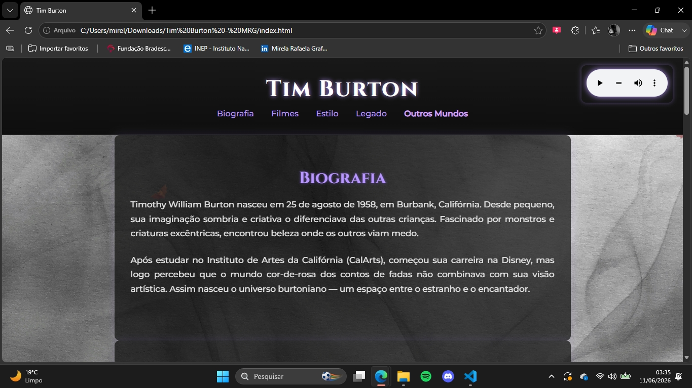
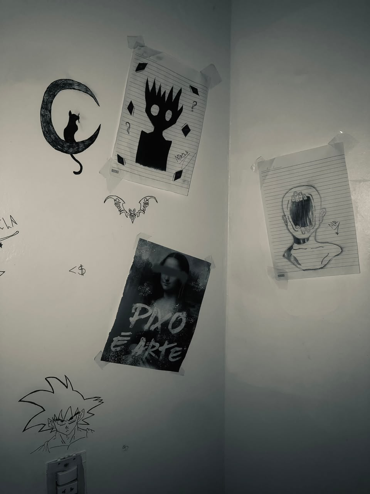

Mensagem de Gaia
Viajante, antes de concluir sua jornada, existe alguém que você precisa conhecer.
Toda realidade precisa de uma criadora. Toda história começa com alguém disposto a imaginar um futuro diferente.
Nome: Mirela Rafaela Graffunder
Série: 3º Ano do Ensino Médio
Escola: Colégio Estadual Padre Eduardo Michelis
Professor Orientador: Leandro Marcos Weizenmann
Tenho extremo carinho e paz ao desenhar coisas que saem da minha cabeça, seja com alguma refêrencia ou apenas com a imaginação. Por isso, alguns projetos (sites) que fiz, representam minhas inspirações.
Sou apaixonada por coisas mágicas, seja fadas, sereias, vampiros e essas coisas. Acredito que a imaginação possa levar alguém longe. O mundo de Tim Burton já foi minha inspiração para um site simples que fiz, mas que sinceramente é meu xodó.
Utilizo HTML5, CSS3, JavaScript e Visual Studio Code.
Meu objetivo é usar minha imaginação, meu conhecimento sobre a tecnologia e todo o ego que existe dentro de mim, para mostrar que sou capaz de fazer coisas incríveis. Afinal, quem somos sem o ego de sempre querer ser melhor em algo?
Espaço reservado para projeto, desenho e momentos importantes da jornada (que no caso incluí meu prof 😉)

